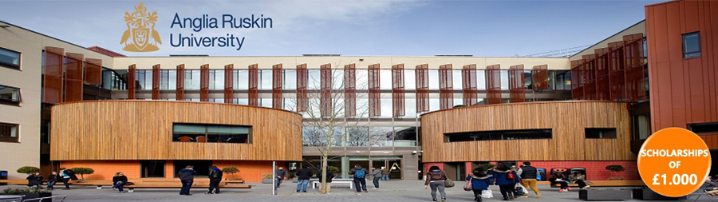

Țări
ȚăriAnglia Ruskin University
Descriere
Anglia Ruskin University este o universitate inovatoare, moderna, cu studenti venind din peste 185 de tari pentru a studia. Au fost numiti printre primele 350 de institutii din lume, in Times Higher Education's World University Rankings 2018.
ARU se situeaza in top 20 The Times and The Sunday Times Good University Guide for 2017 pentru modul de predare excelent.
Punctele forte ale universitatii sunt date de facultatile de Arta, Drept & Stiinte Sociale Medicale, Asistenta Sociala & Educatie, Medicina, Stiinte & Scoala Lord Ashcroft de Business International, precum si de cele sase institutii de cercetare.
Campusurile principale se afla inima oraselor Cambridge si Chelmsford. Universitatea gazduieste 120 de asociatii studentesti care creeaza mediul propice pentru ca tu sa te bucuri pe deplin de experienta universitara.
ARU are o gama larga de facilitati puse la indemana studentilor sai. Laboratoare medicale de ultima generatie, studiouri de televiziune, sala de judecata, laboratoare de IT si computing sunt doar cateva dintre dotarile universitatii.
Informații generale
Tara: Marea Britanie
Limba de predare: Engleza
Ani de studiu: Bachelor: 3-4; Master: 1-2
Inceput an: septembrie - licenta februarie - master
Burse: Da
Campusuri: Cambridge; Chelmsford
Aeroporturi:
Londra – (King's Cross) 45-50 de minute; London Stansted - 35 de minute cu trenul pana in Cambridge; 35 de minute cu masina sau autobuzul pana in Chelmsford; London Luton - 1 ora cu masina, 1:25 cu autobuzul pana in Cambridg
Cazare: Taxe pentru 2018/2019: 118.51 - 159.67 £/saptamana
Programe de licență:
Abnormal and Clinical Psychology
Accounting and Finance
Animal Behaviour
Applied Computer Science
Applied Nutritional Science